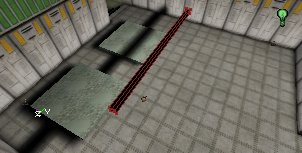
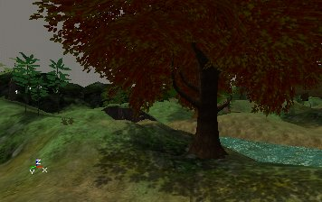

UDN
Search public documentation:
LightingBasicsJP
English Translation
한국어
Interested in the Unreal Engine?
Visit the Unreal Technology site.
Looking for jobs and company info?
Check out the Epic games site.
Questions about support via UDN?
Contact the UDN Staff
한국어
Interested in the Unreal Engine?
Visit the Unreal Technology site.
Looking for jobs and company info?
Check out the Epic games site.
Questions about support via UDN?
Contact the UDN Staff
ライティングの基本
本書の概要: ライティングの文書と詳細の目次 本書の変更記録: 文書を管理が容易なサイズに分割するため、Jason Lentz (DemiurgeStudios)により最終更新。原作者Jason Lentz (DemiurgeStudios)はじめに
ここでは Unreal Ed でライトを使用する方法について紹介します。下にあるのは、ライトのさまざまな機能や使用法方についての、それぞれの概要を記した文書とリンクです。Unreal Ed が始めての方は、順を追ってお読みください。 直接文書にリンクするには、ここのリンクをクリックしてください：ライトの使用法方
 ここをクリックして参照
ここでは、ライティングの基本を説明します。ライトを設置する方法、また、簡単で正確にレベル内でライティングの判断ができるさまざまな機能の説明をしています。
ここをクリックして参照
ここでは、ライティングの基本を説明します。ライトを設置する方法、また、簡単で正確にレベル内でライティングの判断ができるさまざまな機能の説明をしています。
- ライトの使用法方
- ライトの追加
- 半径ビュー
- 3D ビューモード
- ゲーム設定
- リビルド
- ライトの調節
ライトの種類
 ここをクリックして参照
最も一般的はライトはレベルで右クリックして追加する基本的なライトですが、ほかにもさまざまな方法があります。ここではそれらの方法や、最適な使用方法について説明します。
ここをクリックして参照
最も一般的はライトはレベルで右クリックして追加する基本的なライトですが、ほかにもさまざまな方法があります。ここではそれらの方法や、最適な使用方法について説明します。
- ライトの種類
- ゾーンライト
- その他のライトアクタ
- SpotLight (スポットライト)
- SunLight (太陽光)
- TriggerLight (トリガ ライト)
ライティングの参照
 ここをクリックして参照
ライトカラーおよびライティングの項の、全てのライティング プロパティのリストです。このプロパティはライトアクタのみでなくすべてのアクタに使用されます。 いくつかのプロパティには表の後でさらに詳しい説明があります。
ここをクリックして参照
ライトカラーおよびライティングの項の、全てのライティング プロパティのリストです。このプロパティはライトアクタのみでなくすべてのアクタに使用されます。 いくつかのプロパティには表の後でさらに詳しい説明があります。
- ライティングの参照
- LightColor
- ライティング
- UnLit
サーフェス上のライティング

ここをクリックして参照 ライトはさまざまな方法で異なった種類のジオメトリに影響します。ここではそれぞれのケースがどう不必要な誤差を回避するか、また他の有効な機能についても説明します。- サーフェス上のライティング
- Lighting on BSP
- Lighting on Static Meshes
- Lighting on Meshes
- Lighting on Terrain
- Lighting on Sprites
- Lighting on Particles
- Lighting on Movers
特殊ライティング機能

ここをクリックして参照 このライティング テュートリアルでは、ライトの高度な使用法やどうやってさまざまなライティング効果を得るのか説明します。この方法はライティングやライト カラーのプロパティの外部でプロパティを使用しますが、ちょっとした工夫でよい効果を得ることができます。- 特殊ライティング機能
- TexturePaletteLoop
- MovingLights
- Coronas
- Projective Textures